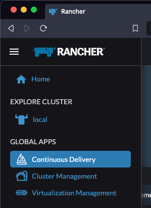
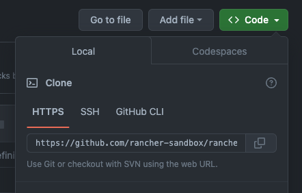

Create & import your first cluster using Fleet
This section will guide you through creating your first cluster and importing it into Rancher Manager using a GitOps workflow with Fleet.
Prerequisites
-
Rancher Manager cluster with Rancher Turtles installed
-
Cluster API providers installed for your scenario - we’ll be using the Docker infrastructure and RKE2 bootstrap/control plane providers in these instructions - see Initialization for common providers using Turtles'
CAPIProvider -
clusterctl CLI - see the releases
Create your cluster definition
The clusterctl CLI can be used to generate the YAML for a cluster. When you run clusterctl generate cluster, it will connect to the management cluster to see what infrastructure providers have been installed. Also, it will take care of replacing any tokens in the chosen template (a.k.a flavour) with values from environment variables.
Alternatively, you can craft the YAML for your cluster manually. If you decide to do this then you can use the templates that infrastructure providers publish as part of their releases. For example, the AWS provider publishes files prefixed with cluster-template that can be used as a base. You will need to replace any tokens yourself or by using clusterctl (e.g. clusterctl generate cluster test1 --from https://github.com/kubernetes-sigs/cluster-api-provider-aws/releases/download/v2.2.1/cluster-template-eks.yaml > cluster.yaml).
|
To maintain proper resource management and avoid accidental deletion of custom resources managed outside of Helm during Helm operations, include the |
|
This guide does not use ClusterClass. Templates that use ClusterClass will require that the experimental feature be enabled. |
To generate the YAML for the cluster do the following (assuming the Docker infrastructure provider is being used):
-
Open a terminal and run the following:
export CONTROL_PLANE_MACHINE_COUNT=1 export WORKER_MACHINE_COUNT=1 export KUBERNETES_VERSION=v1.30.0 clusterctl generate cluster cluster1 \ --from https://raw.githubusercontent.com/rancher-sandbox/rancher-turtles-fleet-example/templates/docker-rke2.yaml \ > cluster1.yaml -
View cluster1.yaml to ensure there are no tokens. You can make any changes you want as well.
|
The Cluster API quickstart guide contains more detail. Read the steps related to this section here. |
Create your repo for Fleet
-
Create a new git repository (this guide uses GitHub)
-
Create a new folder called clusters
-
Move the cluster1.yaml file you generated in the last section to the clusters folder.
-
Create a file called fleet.yaml in the root and add the following contents
namespace: default -
Commit the changes
|
The fleet.yaml is used to specify configuration options for fleet (see docs for further details). In this instance its declaring that the cluster definitions should be added to the default namespace |
After the described steps there will be a repository created structure similar to the example: [https://github.com/rancher-sandbox/rancher-turtles-fleet-example]
Mark Namespace for auto-import
To automatically import a CAPI cluster into Rancher Manager there are 2 options:
-
label a namespace so all clusters contained in it are imported.
-
label an individual cluster definition so that it’s imported.
In both cases the label is cluster-api.cattle.io/rancher-auto-import.
This walkthrough will use the first option of importing all clusters in a namespace.
-
Open a terminal
-
Label the default namespace in your Rancher Manager cluster:
kubectl label namespace default cluster-api.cattle.io/rancher-auto-import=true
Configure Rancher Manager
Now the cluster definitions are committed to a git repository they can be used to provision the clusters. To do this they will need to be imported into the Rancher Manager cluster (which is also acting as a Cluster API management cluster) using the Continuous Delivery feature (which uses Fleet).
There are 2 options to provide the configuration. The first is using the Rancher Manager UI and the second is by applying some YAML to your cluster. Both are covered below.
Using the Rancher Manager UI
-
Go to Rancher Manager
-
Select Continuos Delivery from the menu: 
-
Select fleet-local as the namespace from the top right

-
Select Git Repos from the sidebar
-
Click Add Repository
-
Enter clusters as the name
-
Get the HTTPS clone URL from your git repo 
-
Add the URL into the Repository URL field
-
Change the branch name to main
-
Click Next
-
Click Create
-
Click on the clusters name
-
Watch the resources become ready
-
Select Cluster Management from the menu
-
Check your cluster has been imported
Using kubectl
-
Get the HTTPS clone URL from your git repo
-
Create a new file called repo.yaml
-
Add the following contents to the new file:
apiVersion: fleet.cattle.io/v1alpha1 kind: GitRepo metadata: name: clusters namespace: fleet-local spec: branch: main repo: <https://github.com/rancher-sandbox/rancher-turtles-fleet-example.git> targets: [] -
Apply the file to the Rancher Manager cluster using kubectl:
kubectl apply -f repo.yaml -
Go to Rancher Manager
-
Select Continuos Delivery from the side bar
-
Select fleet-local as the namespace from the top right
-
Select Git Repos from the sidebar
-
Click on the clusters name
-
Watch the resources become ready
-
Select Cluster Management from the menu
-
Check your cluster has been imported